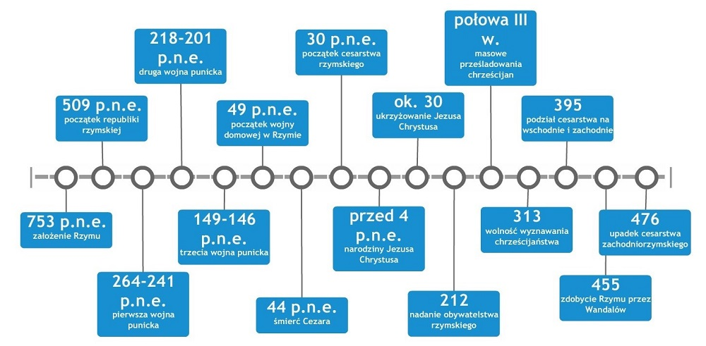

Oś czasu

Starożytny Rzym
Starożytny Rzym był jednym z najpotężniejszych imperiów w historii, znanym z osiągnięć w architekturze, prawie i wojskowości.
Średniowiecze
W średniowieczu Włochy były podzielone na wiele małych państw i księstw, co wpłynęło na rozwój kultury i sztuki.
Renesans
Renesans był okresem wielkiego rozkwitu sztuki i nauki, z takimi postaciami jak Leonardo da Vinci i Michał Anioł.
Czasy Nowe
W czasach nowożytnych Włochy doświadczyły wielu zmian politycznych, w tym zjednoczenia kraju w XIX wieku.